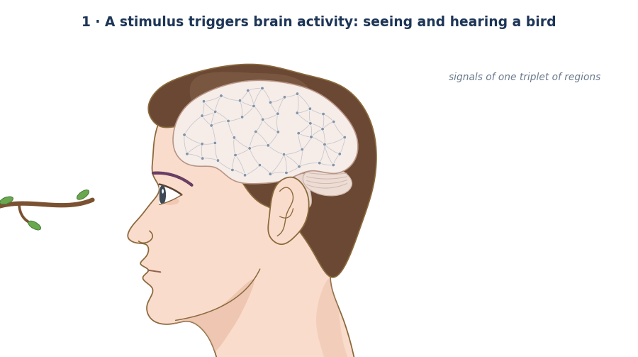
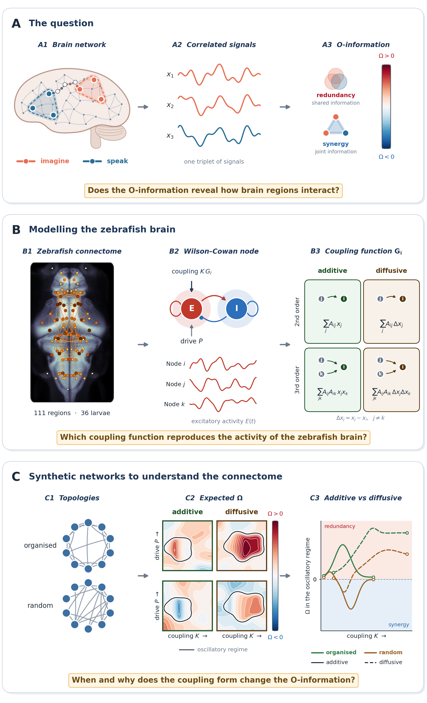
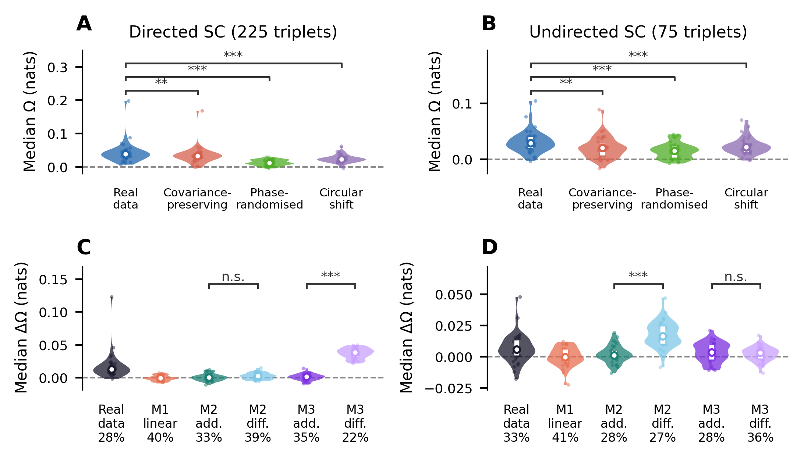
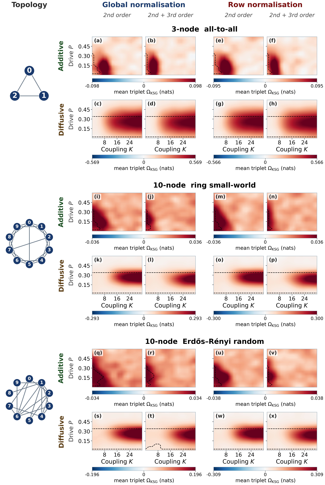
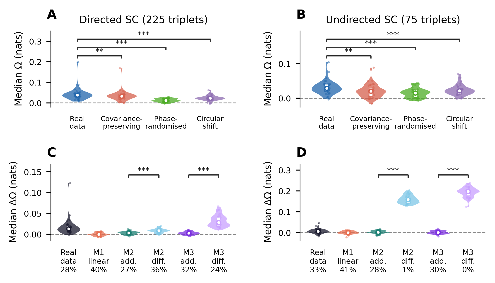
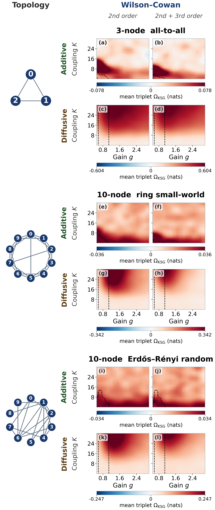

1Summary
What the study asks, how it answers, and what it finds.

The zebrafish brain is redundant
Triplets of brain regions share more information than expected from independent signals with the same dynamics, especially where anatomical links are asymmetric.
Only diffusive coupling reproduces the data
Diffusive models reproduce the empirical functional connectivity and its redundancy (the sign, not the exact magnitude); additive and linear models do not.
Additive coupling saturates
Strong additive input pushes every region to the same saturated level; diffusive input pulls each region towards its neighbours without changing mean activity.
Form matters more than order
An explicit third-order term changed the O-information little and did not produce synergy in networks with only positive weights.
2The question and the approach
Three steps: recordings, models of the zebrafish brain, and synthetic networks that explain the models.
Whole-brain calcium imaging of 36 larvae, 111 brain regions and 300 fixed triplets. The O-information of each triplet is compared with surrogates that keep each region and destroy the relations between regions.
Wilson–Cowan nodes coupled through the zebrafish connectome with four coupling functions. Each model is placed at the point that best reproduces the empirical functional connectivity, never using the O-information.
The same model on a three-node network, an organised ring and a random graph, sweeping drive, coupling strength and gain to understand the zebrafish models.

3Four coupling functions
Input received by node i from its neighbours j, k; Aij is the weight of the link from j to i and Δxj = xj − xi.
(2nd order)
Adds the activity of the neighbours to the input of the node.
Pulls the node towards its neighbours; vanishes when all nodes have the same activity.
(3rd order)
The node also responds to the joint activity of two neighbours.
Contains interactions through which one neighbour lowers the input received from another.
The fan term involves only the links that converge on i; j and k need not be linked. ρ = 20 brings the fan input to a size comparable with the pairwise input.
4One model for every network
The same Wilson–Cowan node, parameters, preprocessing and estimator are used for the zebrafish connectome and the synthetic networks; only the adjacency matrix changes.
dIi = τI−1[ −Ii + (1 − Ii) S(uiI) ] dt + σ dW′i
uiE = cEEEi − cEIIi + P + K Gi(E)
S(u) = β tanh(u + γu²) for u > 0, otherwise 0
| Parameter | Value |
|---|---|
| cEE, cEI, cIE, cII | 16, 12, 15, 3 |
| τE, τI | 2.5, 3.75 |
| β, γ, σ | 0.1, 3, 0.015 |
| Drive P, coupling K | chosen by fit to functional connectivity |
5Main results
All numbers below are computed from the stored outputs in results/.
The zebrafish brain is dominated by redundancy, and only diffusive models reproduce it

| Directed SC (225 triplets) | Undirected SC (75 triplets) | |
|---|---|---|
| Recordings, median ΔΩ | 0.013 nats, positive in 35/36 fish | 0.006 nats, positive in 29/36 fish |
| Linear model and additive pairwise model | ≈ 0 (not significant) | ≈ 0 (not significant) |
| Diffusive models (M2, M3) | positive: 0.003 and 0.039 nats | positive: 0.017 and 0.003 nats |
| Similarity to empirical FC | diffusive 0.26–0.30 · additive ≤ 0.05 · individual fish vs. group 0.83 | |
Synthetic networks: diffusive coupling sustains oscillations and builds redundancy

Additive
Oscillates in only 4–7% of the drive × coupling plane; for K ≳ 5 activity saturates near 0.09 and redundancy stays weak.
Diffusive
Oscillates in half of the plane at every coupling strength; redundancy grows with K, up to 0.52 (three nodes), 0.24 (ring) and 0.16 nats (random).
Supplementary figures


6What the synthetic networks teach about the zebrafish brain
Additive input adds to the drive of every region; strong coupling pushes all regions to the same saturated level, where fluctuations cannot be shared. This is why additive models never reproduce the functional connectivity.
The zebrafish connectome has unequal inputs across regions (coefficient of variation 0.49–0.69), like the random network. Unequal inputs reduce diffusive redundancy; equalising them by row normalisation inflates it.
An explicit third-order term changes the O-information little. With only positive weights, the coupling form matters more than the presence of higher-order terms.
7Reproduce the results
Python ≥ 3.10 with NumPy, SciPy and Matplotlib. Scripts are numbered and resumable; every output is written under results/.
# install and test python -m venv .venv && source .venv/bin/activate pip install -e ".[test]" python -m pytest # recordings: O-information and surrogates python scripts/01_analyse_zebrafish_data.py # simulations (parallel, resumable) python scripts/04_run_main_experiment.py --part synthetic_drive --workers 4 python scripts/04_run_main_experiment.py --part synthetic_gain --workers 4 python scripts/04_run_main_experiment.py --part zebrafish_scan --workers 4 python scripts/04_run_main_experiment.py --part zebrafish_select python scripts/04_run_main_experiment.py --part zebrafish_final --workers 4 python scripts/06_zebrafish_null_correction.py # figures python scripts/05_figure_synthetic_sweeps.py python scripts/07_figure_zebrafish.py python scripts/08_figure_methodology.py python scripts/09_animation_brain_interaction.py # illustrative animation
Every simulation has its own random seed, derived from its parameters but not from the coupling form, so additive and diffusive runs of the same condition share their noise. The zebrafish operating points are chosen from the functional connectivity only, and recordings and models are compared through their own circular-shift surrogates.
8Repository structure
coupling_hoi_study/ ├── configs/ experiment descriptions (JSON); every parameter lives here ├── data/raw/zebrafish/ recordings and connectome (not tracked; data-sharing agreement) ├── src/coupling_hoi/ library │ ├── model.py Wilson–Cowan network model (batched Euler–Maruyama) │ ├── coupling.py additive/diffusive, pairwise/fan coupling inputs │ ├── information.py O-information (nearest-neighbour and Gaussian-copula estimators) │ ├── surrogates.py covariance-preserving, phase-randomised, circular-shift │ ├── networks.py synthetic networks and connectome normalisation │ ├── preprocessing.py filtering, detrending, z-scoring │ ├── data.py zebrafish loading, region selection, triplets │ ├── metrics.py functional connectivity and similarity │ └── experiment.py simulation grids and per-run summaries ├── scripts/ numbered entry points (01 to 09) ├── tests/ unit tests └── results/ figures and arrays generated by the scripts
Data. The zebrafish recordings (36 larvae) and the structural connectome are shared under a data-sharing agreement and are not distributed here. Place the files listed in data/raw/zebrafish/SHA256SUMS in that folder and verify them with sha256sum -c SHA256SUMS.
10How to cite
The manuscript is in preparation for Frontiers in Network Physiology; please cite this repository until the article is published.
@misc{hernandez2026coupling,
author = {Hern{\'a}ndez, Diego and Zamora-L{\'o}pez, Gorka and Gomez, Francisco and
L{\'e}gar{\'e}, Antoine and Hindriks, Rikkert and Laureys, Steven and
Tewarie, Prejaas K. B.},
title = {How the coupling function shapes higher-order dependencies:
network models of the larval zebrafish brain},
year = {2026},
note = {Code and results repository}
}
Funding. D.H. acknowledges support from the Government of Canada through the Emerging Leaders in the Americas Program (ELAP), which funded a research internship at the CERVO Brain Research Center, Université Laval.